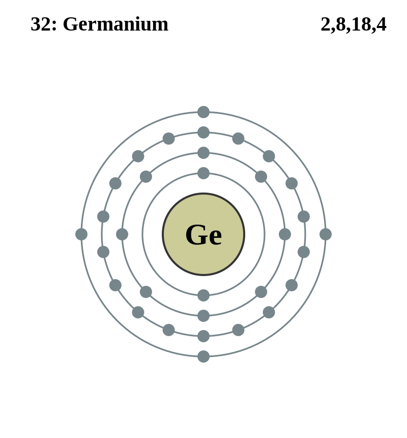

Basic Information about the element
Basic Information about the element
Name: Cobalt
Symbol: Co
Atomic Number: 27

1s2 2s2 2p6 3s2 3p6 3d9
The chemical element Cobalt is classed as a Transition metal.
It was discovered in 1737 by George Brandit.
| Number of Protons/Electrons: | 27 |
| Number of Neutrons: | 32 |
| Atomic Mass: | 58.9332 amu |
| Melting Point: | 1495.0 °C (1768.15 K, 2723.0 °F) |
| Boiling Point: | 2870.0 °C (3143.15 K, 5198.0 °F) |
| Classification: | Transition metal |
| Uses: | Used as magnets, ceramics, special glasses |